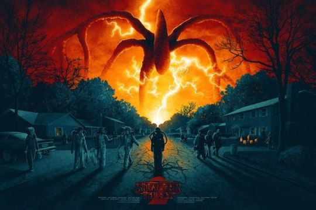
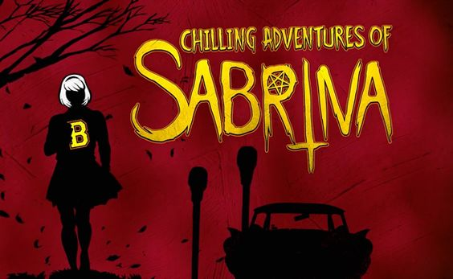
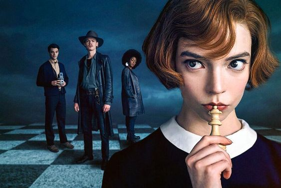

1.
2.
3.
4.
5.
STRANGER THINGS
Ambientata negli anni ottanta nella fittizia città di Hawkins, nell'Indiana, e in parte nel mondo del "Sottosopra", l'inizio della serie è incentrato sulla misteriosa sparizione di un bambino di nome Will e sulla comparsa di Undici, una bambina dai capelli rasati dotata di poteri telecinetici fuggita da un laboratorio segreto, l'Hawkins National Laboratory. Quasi tutti gli eventi che accadono nel corso della vicenda sono strettamente connessi al Sottosopra, un'oscura dimensione parallela al nostro mondo, popolata da creature mostruose.
THE UMBRELLA ACADEMY
L’antefatto delle vicende narrate in The Umbrella Academy riguarda un evento accaduto nella dodicesima ora del primo Ottobre del 1989, quando 43 donne intorno al mondo partorirono dei bambini molto speciali. La cosa eccezionale è che nessuna di loro era incinta all’inizio di quella giornata. Sir Reginald Hargreeves, un eccentrico e avventuriero miliardario decise di adottarne sette e fondare l’Umbrella Academy. Questi bambini dotati di straordinarie abilità furono cresciuti come fratelli e sorelle. Ad ognuno fu assegnato un numero identificativo e divennero degli eroi cittadini sventando rapine e combattendo il crimine.
LE TERRIFICANTI AVVENTURE DI SABRINA
Sabrina Spellman vive nella città di Greendale, dove sembra sempre Halloween, con le zie Zelda e Hilda e con il cugino Ambrose costretto a vivere in casa agli arresti domiciliari a causa di una condanna. Le zie e il cugino gestiscono l’agenzia funebre Spellman. Ne Le terrificanti avventure di Sabrina ogni strega una volta battezzata, deve scegliere un familio ovvero uno spirito conosciuto che si incarna in un animale per fornire protezione. Sabrina viene scelta da Salem uno spirito della foresta che assume le sembianze del famoso gatto nero. Nel giorno del suo 16° compleanno avrebbe dovuto scegliere tra due mondi, quello magico della sua famiglia e quello umano dei suoi amici.
LA REGINA DEGLI SCACCHI
Anni 50, Beth Harmon è una bambina rimasta orfana di madre, e con un padre che non ha mai visto dopo la rottura fra lui e la moglie. Beth viene portata in un orfanotrofio, e qui conosce Jolene, una ragazza di colore più grande di lei con cui fa amicizia. Nell’orfanotrofio in cui vengono tenute le bambine, utilizzano dei farmaci tranquillanti, di cui Beth diventa dipendente. A tenere a galla la bambina, oltre l’amicizia con Jolene, sono le lezioni che le impartisce il custode. Un giorno infatti Beth ha scorto il signor Shaibel giocare a scacchi, e l’ha pregato di insegnarle a giocare. Da qui si scopre che Beth ha un grande talento, che si amplifica sotto l’effetto dei tranquillanti.
GAME OF THRONES
La serie racconta le avventure di molti personaggi ed è ambientata in un grande mondo immaginario costituito principalmente dal continente Occidentale (Westeros) e da quello Orientale (Essos). Il centro più grande e civilizzato di Westeros è la città capitale Approdo del Re, dove si trova il Trono di Spade dei Sette Regni. La lotta per la conquista del trono porta le più potenti e nobili famiglie del continente a scontrarsi o allearsi tra loro in un contorto gioco di potere, che coinvolge anche l'ultima discendente della dinastia regnante deposta. Gli intrighi politici, economici e religiosi dei nobili lasciano la popolazione nella povertà e nel degrado, mentre il mondo viene minacciato dall'arrivo di un inverno diverso dai precedenti, che risveglia creature leggendarie dimenticate e fa emergere forze oscure e magiche.